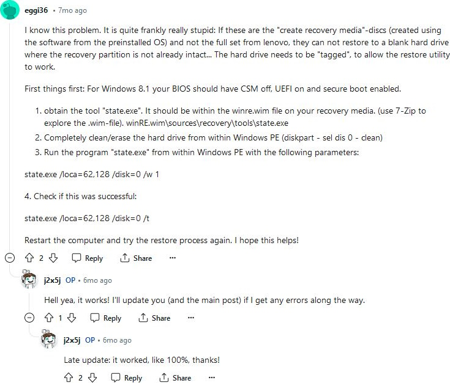

I know this problem. It is quite frankly really stupid: If these are the "create recovery media"-discs (created using the software from the preinstalled OS) and not the full set from lenovo, they can not restore to a blank hard drive where the recovery partition is not already intact... The hard drive needs to be "tagged", to allow the restore utility to work. First things first: For Windows 8.1 your BIOS should have CSM off, UEFI on and secure boot enabled. obtain the tool "state.exe". It should be within the winre.wim file on your recovery media. (use 7-Zip to explore the .wim-file). winRE.wim\sources\recovery\tools\state.exe Completely clean/erase the hard drive from within Windows PE (diskpart - sel dis 0 - clean) Run the program "state.exe" from within Windows PE with the following parameters: state.exe /loca=62,128 /disk=0 /w 1 4. Check if this was successful: state.exe /loca=62,128 /disk=0 /t Restart the computer and try the restore process again. I hope this helps!
